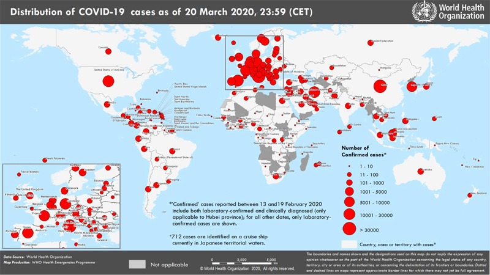

Текущая ситуация с коронавирусом Covid-19: информация ВОЗ от 20.03.2020
Date: 2020-03-22 19:02:48
Topic: Инфекционные заболевания, клиника, диагностика и лечение
На сайте ВОЗ размещены данные на 20.03.2020 о распространении в мире инфекции, вызванной коронавирусом Covid-19. Всего в мире на 20.03.2020 зарегистрировано 266073 подтверждённых случаев заболевания.
На сайте ВОЗ размещены данные на 20.03.2020 о распространении в мире инфекции, вызванной коронавирусом Covid-19.
- Всего в мире зарегистрировано 266073 подтверждённых случаев заболевания коронавирусом Covid-19.
- Из подтверждённых зарегистрированных случаев 81416 были зарегистрированы в Китае.
- Зарегистрировано 11184 летальных исходов (всего в мире), из них 3261 — в Китае, 4032 — в Италии, 1433 — в Иране, 1002 — в Испании, 450 — во Франции, 201 — в США.
- 184657 подтверждённых случаев заболевания были зарегистрированы за пределами Китая, в том числе 253 случая в России, 57 случаев в Республике Беларусь (рис. 1).
- Неблагоприятная ситуация по коронавирусу складывается в Италии, где уже зарегистрировано 47021 случай заболевания, всего зарегистрировано 4032 летальных исходов; в Иране (19644 случаев заболевания, 1433 летальных исходов), в Испании (19980 случаев заболевания, 1002 летальных исходов), в Германии (18323 случаев заболевания, 45 летальных исходов), во Франции (12475 случаев заболевания, 450 летальных исходов), в США (15219 случаев заболевания, 201 летальный исход).
Рис. 1. Распространение нового коронавируса Covid-19: страны и территории с подтверждёнными случаями на 20.03.2020 г.

This article comes from Антибиотики и антимикробная терапия
http://antibiotic.ru/
The URL for this story is: http://antibiotic.ru/index.php?article=2942 |
|
|